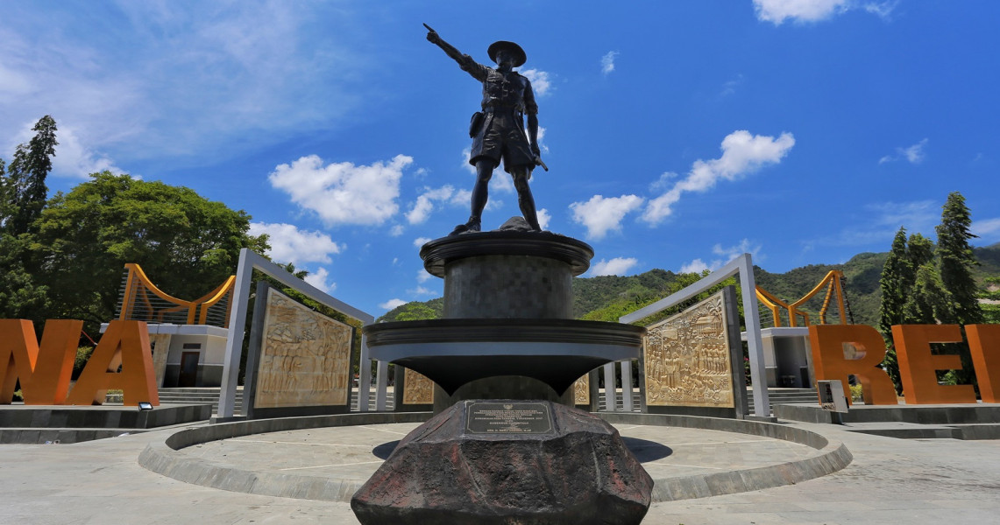
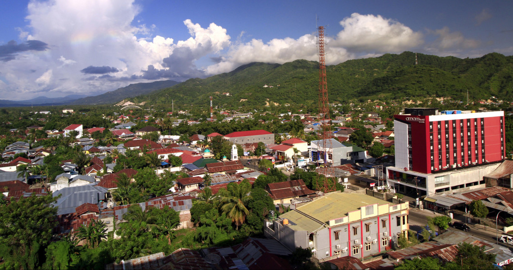
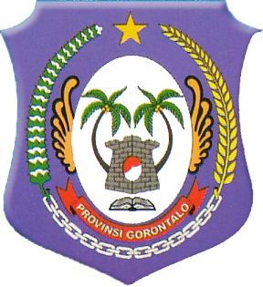

SEJARAH

Menurut catatan sejarah, Jazirah Semenanjung Gorontalo (Gorontalo Peninsula) terbentuk kurang lebih
1300 tahun lalu, di mana Kerajaan Suwawa telah ditemukan berdiri pada sekitar tahun 700 Masehi atau
pada abad ke-8 Masehi.[16] Hal ini diperkuat dengan ditemukannya makam para Raja di tepian hulu
sungai Bulawa. Tidak hanya itu, makam Raja Suwawa lainnya dapat kita temukan di hulu sungai Bone,
yaitu makam Raja Moluadu (salah seorang Raja di Kerajaan Suwawa) bersama dengan makam istrinya dan
anaknya.
Namun, sebagai salah satu jazirah tertua di Sulawesi dan Nusantara, Semenanjung Gorontalo pun
tidak
hanya memiliki catatan sejarah pada prasasti makam-makam Rajanya dahulu, melainkan pula memiliki
situs prasejarah yang telah ditemukan. Situs Oluhuta, merupakan sebuah situs prasejarah dan
memiliki
makam prasejarah di dalamnya. hal ini dapat menjadi bukti bahwa Gorontalo telah memiliki
peradaban
yang sangat lampau.[17]
Sementara itu, Kota Gorontalo merupakan salah satu kota tua di Pulau Sulawesi selain Kota Makassar
dan Manado. Diperkirakan, Kota Gorontalo sudah terbentuk sejak kurang lebih 400 tahun yang lalu atau
sekitar tahun 1500-an pada abad ke-16. Kota Gorontalo pada saat itu menjadi salah satu pusat
penyebaran agama Islam di Kawasan Timur Indonesia, selain Ternate (sekarang bagian dari Provinsi
Maluku Utara).[18]
Seiring dengan penyebaran agama tersebut, Kota Gorontalo akhirnya menjadi pusat pendidikan dan
perdagangan masyarakat di wilayah "Tomini-Bocht" seperti Wilayah Bolaang Mongondow (Sulawesi Utara),
Wilayah Buol, Wilayah Luwuk, Banggai, Donggala (Sulawesi Tengah) bahkan sampai ke Sulawesi Tenggara.
Hal ini dikarenakan, Kota Gorontalo memiliki letak yang sangat strategis, posisinya menghadap
langsung ke Teluk Tomini (bagian selatan) dan Laut Sulawesi (bagian utara).[19]
Kerajaan Gorontalo mulanya berada di Kelurahan Hulawa Kecamatan Telaga sekarang, tepatnya di
pinggiran sungai Bolango. Menurut Penelitian, pada tahun 1024 H, kota Kerajaan ini dipindahkan dari
Keluruhan Hulawa ke Dungingi Kelurahan Tuladenggi Kecamatan Kota Barat sekarang. Kemudian dimasa
Pemerintahan Sultan Botutihe kota Kerajaan ini dipindahkan dari Dungingi di pinggiran sungai
Bolango, ke satu lokasi yang terletak antara dua kelurahan yaitu Kelurahan Biawao dan Kelurahan
Limba B. Dengan letaknya yang stategis yang menjadi pusat pendidikan dan perdagangan serta
penyebaran agama islam maka pengaruh Gorontalo sangat besar pada wilayah sekitar, bahkan menjadi
pusat pemerintahan yang disebut dengan Kepala Daerah Sulawesi Utara Afdeling Gorontalo yang meliputi
Gorontalo dan wilayah sekitarnya seperti Buol ToliToli dan, Donggala dan Bolaang Mongondow.
GEOGRAFIS

Wilayah Provinsi Gorontalo yang pada zaman kolonial Belanda dikenal dengan sebutan "Semenanjung
Gorontalo" (Gorontalo Peninsula) terletak pada bagian utara Pulau Sulawesi, tepatnya pada 0° 19′ 00”
- 1° 57′ 00” LU (Lintang Utara) dan 121° 23′ 00” - 125° 14′ 00” BT (Bujur Timur).
Letak Provinsi Gorontalo sangatlah strategis, karena diapit oleh dua perairan, yaitu Teluk
Gorontalo
atau yang lebih dikenal dengan nama Teluk Tomini di sebelah Selatan dan Laut Sulawesi di sebelah
Utara. Dalam catatan sejarah maritim Nusantara, Laut Sulawesi menjadi penting karena merupakan
jalur
pelayaran dari pulau Sulawesi menuju Filipina yang juga melalui jalur wilayah perairan
Kesultanan
Sulu di sebelah Timur dari Negara Malaysia.
Sedangkan Teluk Gorontalo atau Teluk Tomini sejak dahulu kala menjadi sumber kehidupan penduduk
Kerajaan-Kerajaan yang bermukim di sekitarnya. Teluk ini pun sejak dahulu ramai oleh lalu lintas
pelayaran dan perdagangan, karena menjadi tempat bertemunya Kerajaan yang berada di kawasan
"Tomini-Bocht" (wilayah kawasan Teluk Tomini), Ternate, Buton, bahkan menjadi jalur masuknya
perantau dari Hokkian (Tiongkok) serta dari Jazirah Arab.
LAMBANG PROVINSI

- Lambang Daerah Provinsi Gorontalo pada bagian luar berbentuk jantung yang memberi makna
kesetiaan sebagai pelindung kehidupan rakyat Gorontalo.
- Lambang Daerah Provinsi Gorontalo pada bagian dalam berbentuk bulat lonjong atau bulat telur
yang memberi makna adanya gagasan, ide atau cita-cita yang indah, yang kelak menetas menjadi
sesuatu kesejahteraan hidup rakyat Gorontalo.
- Lambang Daerah Provinsi Gorontalo dengan bentuk dalam yang menampakkan keserasian formasi gambar
yang terdiri dari warna putih di tengah dan diikuti oleh posisi padi-bintang, kapas-rantai
memberi makna adanya keteraturan adat, agama, hukum dalam semua pola kehidupan masyarakat.
- Lambang Daerah Provinsi Gorontalo memiliki nuansa Global:
- Warna biru keunguan adalah warna yang memberi makna tenang, setia dan selalu ingin
mempertahankan kebenaran dan harapan masa depan yang cerah.
- Model pohon kelapa yang melengkung memberi makna gerak dinamis dan tidak diam tetapi
selalu berbuat untuk masa depan.
- Sayap maleo yang mengembang memberi makna dinamika siap untuk tinggal landas dan siap
bersaing.
- Buku yang terbuka melambangkan keinginan masyarakat untuk siap meraih prestasi dalam
Ilmu Pengetahuan dan Teknologi serta Iman dan Taqwa secara terus menerus.
- Bintang mengandung makna global jika dikaitkan dengan cita-cita yang tinggi yaitu
"Gantungkan cita-cita setinggi bintang di langit"
- Pita mempunyai makna keinginan masyarakat Gorontalo untuk menyerap, merekam dan memiliki
ilmu pengetahuan dan teknologi.
- Lambang Daerah Gorontalo memiliki nuansa Nasional:
- Padi dan Kapas yang mengandung makna kemakmuran dan kesejahteraan seperti pada
Pancasila.
- Rantai mempunyai makna adanya pengakuan persatuan dan kesatuan dalam kerangka Bhineka
Tunggal Ika.
- Lambang daerah Gorontalo memiliki nuansa Lokal:
- Bintang adalah lambang keagamaan, sehingga selaras dengan filosofi "Adat bersendikan
syara, syara bersendikan Kitabullah".
- Benteng bermakna masyarakat Gorontalo teguh dan kukuh mempertahankan Harga diri,
Martabat, Adat, Agama dan Negara
- Rantai mempunyai makna adanya pengakuan persatuan dan kesatuan dalam kerangka Bhineka
Tunggal Ika.
- Pemaknaan warna dan simbol simbol lainnya dalam lambang
- Simbol rantai yang memberi makna pada peristiwa patriotik:
- Rantai yang berjumlah 23 butir melambangkan tanggal 23 Januari
- Kapas yang berjumlah 19 buah dan padi berjumlah 42 butir melambangkan tahun 1942
- Sayap maleo yang berjumlah 16 helai melambangkan lahirnya Provinsi Gorontalo pada
tanggal 16 Februari 2000
- Warna:
- Hijau mempunyai makna kesuburan
- Kuning Mempunyai makna keagungan dan Kemuliaan
- Putih bermakna Kesucian dan Keluhuran
- Merah mempunyai makna keberanian dan perjuangan